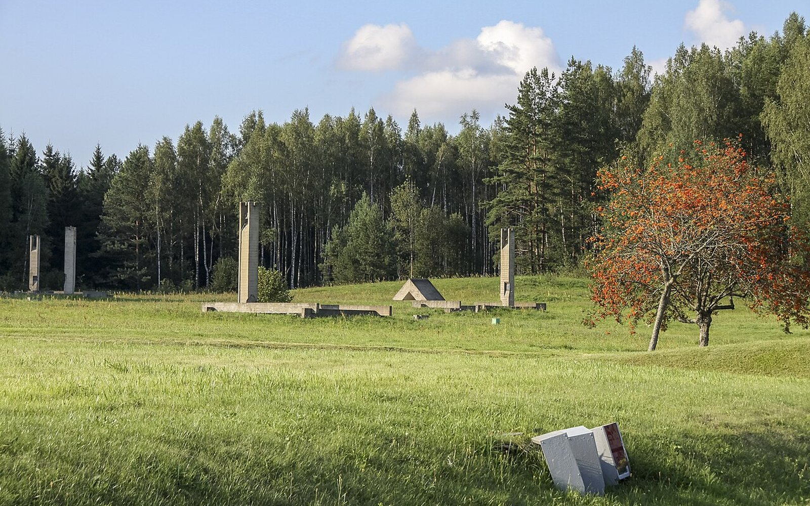

Гід па месцах памяці
Памятаць —
значыць бачыць.
Гатовыя прагулкі па месцах памяці: ад гадзіны ў цэнтры Мінска да дзвюх гадзін у Брэсце і Гродне. З афіцыйнымі апісаннямі, картай і маршрутам, які можна прайсці самому.

Мінская вобласць · 54°20′ NХатынь. Мемарыял на месцы вёскі, спаленай 22 сакавіка 1943 года.
Фота: Joakim BerndesCC BY-SA 4.0 · Wikimedia Commons
7 678
аб’ектаў у афіцыйным каталозе
4 933
кропак з каардынатамі на карце
21
вялікіх нарысаў
7
абласцей і горад Мінск
Гатовыя прагулкі
Адна гадзіна. Дзве гадзіны. Без спешкі.
Мы сабралі маршруты па часе: кароткая прагулка па цэнтры Мінска, дзве гадзіны па месцах памяці і больш доўгія маршруты па Брэсце, Гродне, Віцебску, Полацку, Гомелі, Магілёве, Каменцы і Нясвіжы. У кожнай прыпынку — афіцыйнае апісанне і спасылка на крыніцу.
Загрузка прагулак…
Час паказаны арыенціровачна — без уліку наведвання музеяў і прыпынкаў на каву.Усе прагулкі
Карта Беларусі
Усе месцы з каардынатамі — на адной карце.
Мяжа краіны і кропкі афіцыйнага каталога. Эпоха бачная толькі там, дзе яна вынікае з датавання або з поля нарыса. Прагулка малюецца па ўжо сабраных прыпынках.
Вялікія нарысы
Не даты, а месцы, дзе гісторыя становіцца адчувальнай.
Мы выбіралі аб’екты, без якіх цяжка ўявіць памяць пра вайну і культурную спадчыну Беларусі. У кожнага — афіцыйныя крыніцы, фотаздымкі і каардынаты.


Усе гісторыі суправаджаюцца спасылкамі на афіцыйныя сайты музеяў і Дзяржаўны спіс.Усе месцы каталога
Маршрут
Саберыце сваю карту памяці.
Выберыце гатовую прагулку або дадайце свае месцы з каталога. Маршрут захоўваецца ў браўзеры — без рэгістрацыі.
Выбраць прагулку01
Выберыце месцы
Праз пошук або карткі аб’ектаў.
02
Расстаўце парадак
Мяняйце кропкі месцамі ў спісе.
03
Адкрыйце маршрут
Спасылкі на Google, Яндекс і OSM.
Крыніцы
Не пераказ, а правераная аснова.
Асноўны слой даных — Дзяржаўны спіс гісторыка-культурных каштоўнасцей. Аўтарскія тэксты абапіраюцца на афіцыйныя сайты музеяў і мемарыялаў.
Афіцыйны каталог
Назвы, адрасы, катэгорыі і выявы аб’ектаў — heritage.gov.by. Апісанні прыведзены на мове арыгінала.
Музеі і мемарыялы
Хатынь, Брэсцкая крэпасць, Ола, Красны Бераг, Азарычы і іншыя — са спасылкамі на іх афіцыйныя старонкі.
Фотаздымкі і ліцэнзіі
Здымкі Wikimedia Commons — з указаннем аўтара і ліцэнзіі. Фота музеяў — з указаннем крыніцы. Усе крэдыты — на асобнай старонцы.